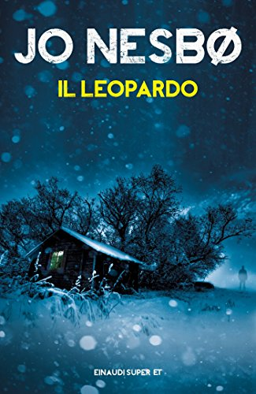
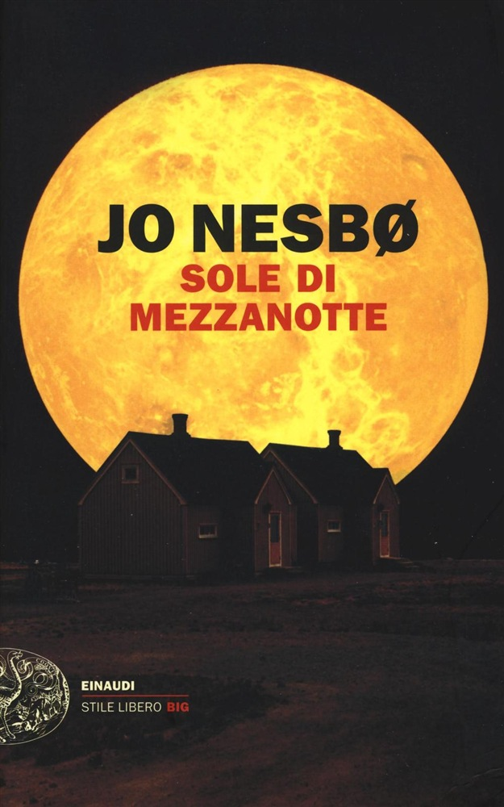

Autore: Jo Nesbo
Editore: Piemme
Genere: Thriller
Pagine: 544
Anno: 2013
“Se la fisica quantistica non ci spaventa, è perché non l’abbiamo capita.”
E’ una fredda sera di novembre.
Oslo è già avvolta dalle tenebre e sta cadendo la prima neve della stagione.
Birte Becker, una giovane madre di famiglia, è appena rientrata a casa dopo il lavoro.
Osservando la nevicata dalla finestra, si accorge che davanti alla sua abitazione è comparso un pupazzo di neve che sembra scrutarla malignamente.
Durante la notte la donna sparisce misteriosamente.
Alcuni suoi effetti personali vengono trovati proprio sull’uomo di neve.
Il detective Harry Hole si butta a capofitto nelle indagini, nel vago tentativo di sfuggire alla disperazione causata dell’imminente matrimonio della ex fidanzata Rakel.
Ben presto dalle indagini emergono inquietanti analogie con altri casi di donne con figli scomparse in diverse zone della Norvegia nei vent’anni precedenti.
Ma perché questo serial killer si accanisce sulle madri?
Cosa accomuna tutte queste donne?
Perché l’assassino lascia loro un pupazzo di neve come messaggero di una morte imminente?
Chi sarà la prossima vittima designata?
Questo libro è il settimo capitolo della saga dedicata al personaggio di Harry Hole, detective geniale e maledetto, perennemente in bilico tra sobrietà e Jim Beam.
Lo stile è accattivante, asciutto, fluido e coinvolgente. Tra le righe di quest’opera -a tinte decisamente noir- emergono anche diverse massime bellissime su diversi aspetti della condizione umana come ad esempio la malattia, la pazzia e la paura. La narrazione è caratterizzata da scene esplicite e piuttosto violente e da un forte senso di inquietudine che impregna ogni parola e ogni pensiero dei personaggi. La trama evolve senza momenti di noia, con continui e spiazzanti colpi di scena che tengono incollato il lettore alle pagine fino alle adrenaliniche scene finali.
I personaggi sono caratterizzati nei più minimi dettagli fisici, caratteriali e psicologici e vengono dipinti a tutto tondo in una sorta di chiaroscuro che evidenzia anche le loro debolezze ed i loro lati oscuri.
I personaggi ricorrenti, presenti anche negli altri capitoli della serie, nel tempo cambiano, maturano invecchiano ed evolvono. Lo stesso protagonista è oramai molto diverso dal giovane poliziotto descritto nei primi thriller.
In questo libro troviamo infatti un Harry Hole oramai quarantenne, determinato e sicuro di sé, ma anche e più che mai consapevole delle sue fragilità e debolezze.
Un Harry che grazie al suo acume ed alle sue intuizioni epifaniche riesce sempre a mettere in scacco il suo antagonista ma che, anche quando vince, perde sempre qualcosa di importante di se stesso o di quello che ama.
“Le storie interessanti non parlano mai dei successi continui, ma piuttosto delle sconfitte spettacolari.”
Molto interessante anche il personaggio della bella e seducente poliziotta Katherine Bratt che si distingue per il suo grande intuito investigativo e per la sua personalità borderline, esempio lampante di quanto a volte sia sottile il confine tra genio e follia.
Nesbo, pur proteggendone l’identità fino alla fine, mette molta cura anche nel costruire la personalità del serial killer, facendo trasparire la genesi della sua pazzia e dell’odio che lo porta ad accanirsi sulle sue vittime, quasi volesse umanizzare il più possibile la sua figura e giustificare le sue azioni agli occhi del lettore.
Ma la cifra stilistica dell’autore si esprime anche e soprattutto nel suo modo poetico e spettacolare di raccontare i luoghi. In questo libro, da cui peraltro è stata ricavata la sceneggiatura di un film hollywoodiano che arriverà nelle sale cinematografiche nel 2017, Jo Nesbo fa scorrere sullo sfondo delle vicende narrate i paesaggi innevati delle zone rurali, le immagini della piovossima Bergen e delle sue montagne e le atmosfere alla Gotham City di una Oslo avvolta nel gelo e nell’oscurità dell’inverno incombente.
Nel complesso giudico questo thriller uno dei migliori che ho letto nella vita. E’un mix perfetto di stile, adrenalina, logica, sensualità ed introspezione psicologica: il nirvana per ogni cultore del genere.

L'AUTORE - Jo Nesbø è nato a Oslo nel 1960, da una famiglia di scrittori, lettori e cantastorie. Prima di abbracciare il suo destino e diventare il piú grande autore di crime norvegese si è cimentato in mille mestieri. Ha giocato a calcio nella serie A del suo paese, ha lavorato come giornalista freelance, ha fatto il broker in borsa. Cantante e compositore, si esibisce tutt'oggi regolarmente con la band norvegese dei Di Derre. I suoi libri spaziano dal giallo alla letteratura per l'infanzia, con esiti geniali. Della serie con protagonista l'ispettore Harry Hole, presso Einaudi ha pubblicato: Il leopardo, Lo spettro, Polizia, Il pipistrello, Scarafaggi, Nemesi, Il pettirosso e La stella del diavolo. Per Einaudi sono usciti anche i thriller Il cacciatore di teste, Il confessore, Sangue e neve e Sole di mezzanotte. I suoi libri hanno venduto oltre nove milioni di copie.
Dello stesso autore su THRILLERNORD:
 IL LIBRO - Una ragazza norvegese di poco piú di vent'anni è stata uccisa a Sydney. L'ispettore Harry Hole della squadra Anticrimine di Oslo viene mandato in Australia per collaborare con la polizia locale e in particolare con Andrew Kensington, un investigatore di origini aborigene tanto acuto quanto misterioso...
IL LIBRO - Una ragazza norvegese di poco piú di vent'anni è stata uccisa a Sydney. L'ispettore Harry Hole della squadra Anticrimine di Oslo viene mandato in Australia per collaborare con la polizia locale e in particolare con Andrew Kensington, un investigatore di origini aborigene tanto acuto quanto misterioso...
 IL LIBRO - Il neopromosso Ispettore Harry Hole viene trasferito dall’anticrime di Oslo all’agenzia di Intelligence POT e da qui segue le tracce di un rarissimo fucile di precisione entrato illegalmente in Norvegia...
IL LIBRO - Il neopromosso Ispettore Harry Hole viene trasferito dall’anticrime di Oslo all’agenzia di Intelligence POT e da qui segue le tracce di un rarissimo fucile di precisione entrato illegalmente in Norvegia...
 IL LIBRO - Dopo quella che doveva essere una cena innocente con la sua vecchia fiamma Anna Bethsen , l’ispettore Harry Hole si sveglia sul divano di casa sua con i postumi di una sbornia e nessun ricordo della sera precedente. Poche ore dopo è lui stesso a trovare Anna morta nel suo letto...
IL LIBRO - Dopo quella che doveva essere una cena innocente con la sua vecchia fiamma Anna Bethsen , l’ispettore Harry Hole si sveglia sul divano di casa sua con i postumi di una sbornia e nessun ricordo della sera precedente. Poche ore dopo è lui stesso a trovare Anna morta nel suo letto...
IL LIBRO - Un soldato dell’esercito della salvezza viene ucciso nel centro di Oslo durante un concerto di Natale. A colpire è un sicario arrivato dalla ex Jugoslavia.
Ma chi è il mandante di questo efferato omicidio? Harry Hole, Beate Lonn e Halvorsen indagano nell’ambiente dell’esercito della salvezza dove niente è come appare in superficie. L’indagine porterà Harry a Zagabria dove la ferita che la della guerra dei Balcani ha prodotto nella società è ancora aperta...
 IL LIBRO - Kaya Solness, affascinante agente dell’anticrimine di Oslo, riceve dal capo della polizia l’incarico di trovare e rimpatriare il commissario Harry Hole...
 IL LIBRO - Oslo è nella morsa di una delle estati piú torride che la storia ricordi. In un appartamento del centro una giovane donna giace in una pozza di sangue, assassinata. Un dito è stato reciso dalla sua mano sinistra e dietro la sua palpebra è stato nascosto un minuscolo diamante a cinque punte, la stella del diavolo. Nello stesso momento, in un altro punto della città, il detective Harry Hole giace nel suo appartamento, completamente ubriaco. Tuttavia, è proprio il capo della polizia, Bjarne Møller, che lo costringe a riemergere dal suo isolamento. È a corto di uomini ma, soprattutto, vuole dare a Hole ...
IL LIBRO - Oslo è nella morsa di una delle estati piú torride che la storia ricordi. In un appartamento del centro una giovane donna giace in una pozza di sangue, assassinata. Un dito è stato reciso dalla sua mano sinistra e dietro la sua palpebra è stato nascosto un minuscolo diamante a cinque punte, la stella del diavolo. Nello stesso momento, in un altro punto della città, il detective Harry Hole giace nel suo appartamento, completamente ubriaco. Tuttavia, è proprio il capo della polizia, Bjarne Møller, che lo costringe a riemergere dal suo isolamento. È a corto di uomini ma, soprattutto, vuole dare a Hole ...
 IL LIBRO - Norvegia, (di nuovo) anni 70. Un uomo che dice di chiamarsi Ulf sta fuggendo. Percorrendo
milleottocento chilometri verso l'angolo più remoto della penisola, arriva in un piccolo villaggio di
montagna di nome Kasund, dove il sole non tramonta mai. Ulf spera di trovare in questa comunità
isolata un nascondiglio adatto...